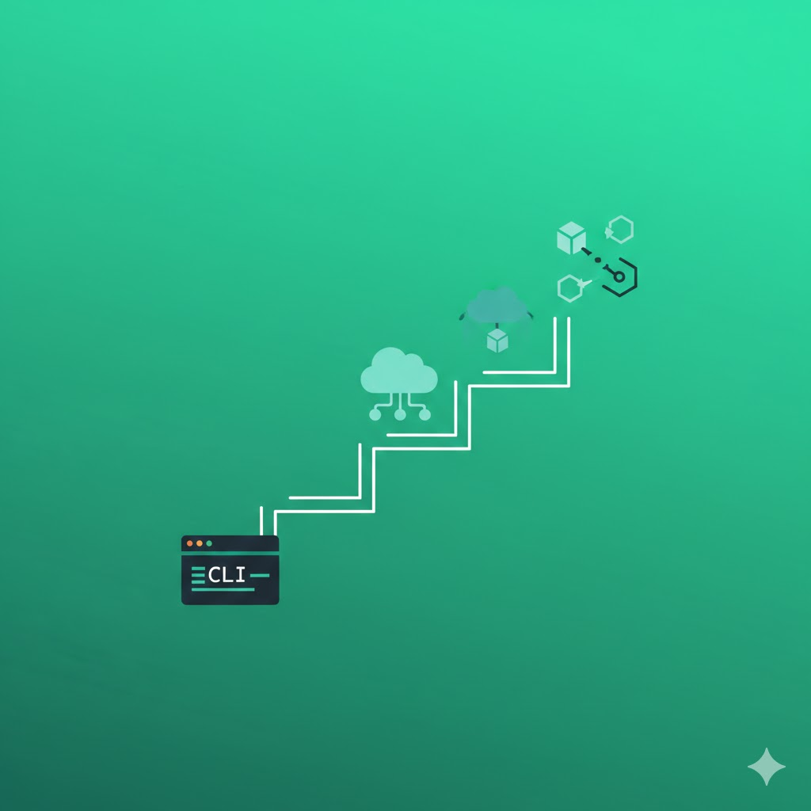

From CLI to NetDevOps: A Practical Transformation Guide
You have 10+ years of CLI experience. Juniors talk about Python and Ansible. Do you feel left behind?
This article is for you. I'll show you a practical path from "Manual Network Engineer" to "NetDevOps Pro" — without becoming a programmer.
"You don't need to know how to program to automate. You need to think in processes."
Myth #1: "I Need to Learn Python"
No. Python is useful, but not required to start. You can begin with:
- No-code tools — GUI that generates configs
- Ansible with ready playbooks — YAML is not programming
- API-based tools — you click, it works
Python will come later, naturally, when you need more customization.
Your Transformation Path (3 Months)
Month 1: Quick Wins
Goal: Save your first 5 hours
- Pick ONE repetitive task (e.g., config backups)
- Automate it with a GUI tool
- Measure how much time you saved
Month 2: Standardization
Goal: Golden Config for top 3 tasks
- NTP configuration template
- SNMP v3 template
- AAA/TACACS+ template
One template = hundreds of devices configured identically.
Month 3: Compliance & Reporting
Goal: Automated security audit
- Security Score for entire network
- CVE compliance check
- Report for management (PDF, one-click)
What Do You Gain?
- Time — 20+ hours monthly for interesting projects
- Confidence — you can say "yes, I know automation"
- Market value — NetDevOps is the future, be ready
- Fewer errors — zero typos in configs
Common Mistakes (You Can Avoid)
- "I'll automate everything at once" → Start with one task
- "I need to learn Python first" → Start with GUI tools
- "My company won't allow this" → Start with yourself, show results
Start Your Transformation Today
NetDevOps Micro-Tools — Free plan for 10 devices. Zero risk.